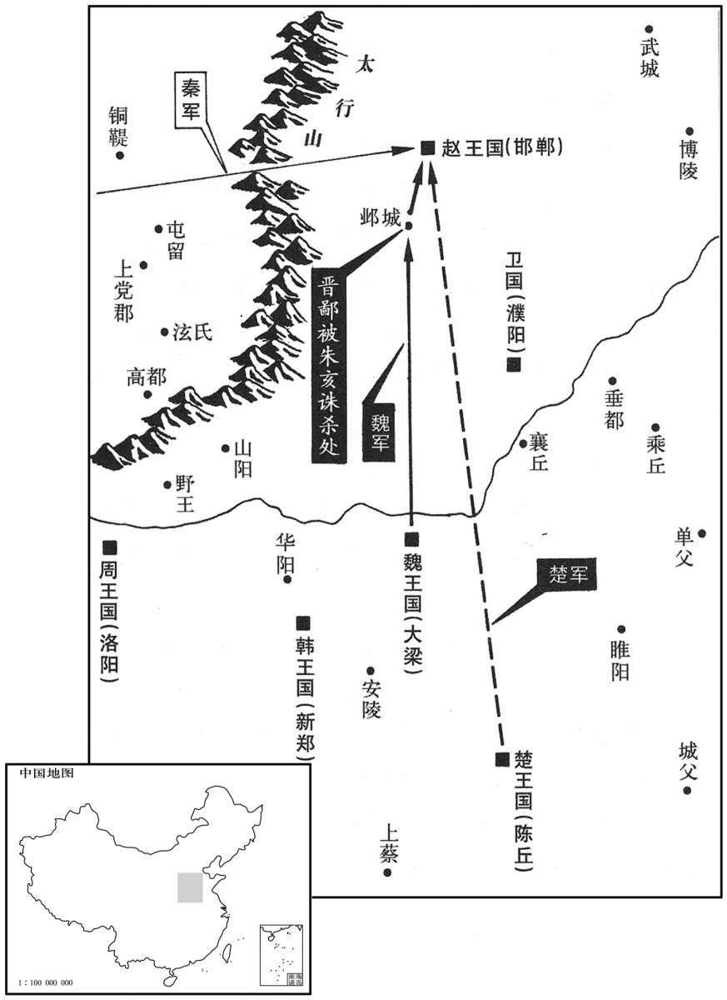

公元前258年资治通鉴：本年记事、原文与白话对照
按原书编年位置阅读；追叙和史论不等于本年发生的事件。白话采用所据译本，缺译不以生成译文补齐。
卷5 · 本年记事
公元前258年 · 赧王在位第57年
五十七年〔（癸卯、前二五八）〕

本年形势与背景参考图
正月，王陵攻邯郸，少利，〔邯郸，音寒丹。少利，谓兵颇失利也。少，始绍翻。〕益发卒佐陵；陵亡五校。〔校，户教翻。校，犹部队也。立军之法，一人曰独，二人曰比，三人曰参；比参曰伍，五人为列，列有头；二列为火，十人有长，立火子；五火为队，队五十人，有头；二队为官，官百人，立长；二官为曲，曲二百人，立侯；二曲为部，部四百人，立司马；二部为校，校八百人，立尉；二校为裨将，千六百人，立将军；二裨将军三千二百人，有将军、副将军。〕武安君病愈，王欲使代之。武安君曰：“邯郸实未易攻也；〔易，以豉翻。〕且诸侯之救日至。彼诸侯怨秦之日久矣，秦虽胜于长平，士卒死者过半，国内空，远绝河山而争人国都，〔自秦而攻邯郸，有大河及王屋、太行诸山之阻。横度曰绝。〕赵应其内，诸侯攻其外，破秦军必矣。”王自命不行，〔秦王亲命之行而不肯行也。〕乃使应侯请之。武安君终辞疾，不肯行；乃以王龁代王陵。〔应，于陵翻。龁，恨勿翻。〕
正月，王陵进攻邯郸，几次失利，秦王便征发更多的兵丁去支援王陵；王陵损失了五校，仍不能胜。这时武安君白起病愈，秦王想派他去替代王陵。白起却说：“邯郸实在是不容易攻下的，而且诸侯救兵一天便可到达。那些国家对秦国的怨恨已经积蓄很久了。秦国虽然在长平一战大获全胜，但自己士兵也死亡过半，国内空虚，再长途跋涉去远攻别人的国都，这时如果赵国在内抵抗，各国在外围进攻，秦军必然大败。”秦王见亲自下命令不行，又让应侯范睢去劝说白起。白起始终以病坚决推辞，不肯前去，于是秦王只得派王去代替王陵。
赵王使平原君求救于楚，平原君约其门下食客文武备具者二十人与之俱，得十九人，余无可取者。毛遂自荐于平原君。〔姓谱：毛本自周武王母弟毛公。〕平原君曰：“夫贤士之处世也，譬若锥之处囊中，其末立见。〔夫，音扶。毛晃曰：锥，锐也；又器，如钻。囊，袋也；有底曰囊。处，昌吕翻。见，贤遍翻。〕今先生处胜之门下三年于此矣，左右未有所称诵，胜未有所闻，是先生无所有也。先生不能，先生留！”〔以毛遂为不能而使之留也。〕毛遂曰：“臣乃今日请处囊中耳！使遂蚤得处囊中，乃脱颖而出，非特其末见而己。”〔处，昌吕翻。见，贤遍翻。毛晃曰：锥铓曰颖。〕平原君乃与之俱，十九人相与目笑之。〔索隐曰：谓目视而侮笑之。〕平原君至楚，与楚王言合从之利害，日出而言之，日中不决。毛遂按剑历阶而上，谓平原君曰：“从之利害，两言而决耳！〔两言，谓利与害也。从，子容翻。上，时掌翻。〕今日出而言，日中不决，何也？”楚王怒叱曰：“胡不下！〔胡，何也。〕吾乃与而君言，〔而，犹汝也。〕汝何为者也？”毛遂按剑而前曰：“王之所以叱遂者，以楚国之众也。今十步之内，王不得恃楚国之众也！王之命悬于遂手。吾君在前，叱者何也？且遂闻汤以七十里之地王天下，〔王，于况翻。〕文王以百里之壤而臣诸侯，岂其士卒众多哉？诚能据其势而奋其威也。今楚地方五千里，持戟百万，此霸王之资也。以楚之强，天下弗能当。白起，小竖子耳，率数万之众，兴师以与楚战，一战而举鄢、郢，再战而烧夷陵，〔事见上卷三十七年。史记正义曰：鄢乡故城，在襄州率道县西南九里。安郢城，在荆州江陵县东北七里。鄢，于幰翻。郢，以井翻。〕三战而辱王之先人，〔谓焚夷楚之陵庙也。〕此百世之怨而赵之所羞，而王弗之恶焉。合从者为楚，非为赵也。吾君在前，叱者何也？”楚王曰：“唯唯，〔恶，乌路翻。为，于伪翻。唯，于癸翻。〕诚若先生之言，谨奉社稷以从。”〔从，如字。〕毛遂曰：“从定乎？”楚王曰：“定矣。”毛遂谓楚王之左右曰：“取鸡、狗、马之血来！”〔索隐曰：盟之所用牲，贵贱不同：天子用牛及马；诸侯用犬及豭；大夫以下用鸡。今此总言盟之用血，故云取鸡、狗、马之血来耳。索，山客翻。豭，居牙翻。〕毛遂奉铜盘而跪进之楚王曰：“王当歃血以定从，〔索隐曰：歃血，若周礼则用珠盘。奉，读曰捧。歃，色洽翻，又所甲翻。从，子容翻。〕次者吾君，次者遂。”遂定从于殿上。毛遂左手持盘血而右手招十九人曰：“公等相与歃此血于堂下！公等录录，所谓『因人成事』者也。”〔说文：录录，随从之貌，音禄。索隐曰：音六。王劭曰：录，借字耳。〕平原君已定从而归，至于赵，曰：“胜不敢〔【章：十二行本“敢”下有“复”字；乙十一行本同；孔本同；张校同；退斋校同。】〕相天下士矣！”〔相，息亮翻。〕遂以毛遂为上客。
赵王派平原君赵胜到楚国去求救，赵胜准备挑选门下食客中文武双全的二十个人一起前往，但只挑出十九个，剩下的都不足取。这时有个叫毛遂的人向赵胜自我推荐。赵胜说：“贤良人才为人处世，好比锥子在口袋中，锥尖立即能露出来。如今先生来到我赵胜门下已经三年，我左右的人没有谁称赞过你，我也未听说过你的作为，说明先生没有什么长处，先生不能干，先生留下吧！”毛遂说道：“我不过今天才请你把我放到口袋里而已！如果早把我放进去，我早就脱颖而出了，岂止是露出个锥尖呢！”平原君赵胜于是让毛遂一同赴楚，另外十九个人都相视嘲笑他。赵胜到了楚国，向楚王阐述联合抗秦的必要性，从太阳升起时开始谈，一直谈到中午，楚王仍是犹豫不决。毛遂于是手按宝剑顺着台阶走上去，对平原君说：“联合抗秦的重要性，‘利’、‘害’两个字可以说清楚，作出决定！现在从日出时谈起，到中午还不能决断，是什么原因？”楚王怒斥毛遂道：“还不赶快滚下去，我和你的主人说话，你算是什么东西？”毛遂按着剑又上前几步说：“大王你之所以斥责我，是仗着楚国人多势众。现在咱们相距在十步以内，你不可能依仗楚国人多势众了！你的性命在我的手中。在我的主人面前，你为什么喝斥我？我毛遂听说商朝开国的汤王以七十里地方为开端，终于称王天下；周朝创业的周文王仅凭着一百里土地，使诸侯臣服。他们难道是仗着兵多将广、人多势众吗？只不过是顺应历史大势、振奋扬威而已。现在楚国有五千里广地，持戟战士一百万，这是称王称霸的资本呀！以楚国的强大，各国都难以抵挡。白起，不过是个小人物，带着几万兵，兴师动众与楚国作战，一战就夺去鄢、郢两城，再战便火烧夷陵，三战已将楚国宗庙平毁，侮辱楚王祖先。这是百世难解的仇怨，连赵国都替你羞愧，而大王却不以为难堪。现在提倡联合抗秦，实在是为了楚国，不是为赵国啊！我的主人在面前，你还喝斥我什么？”楚王只好说：“是的是的，正像先生指教的那样，我愿意以全国的力量与你们合作。”毛遂便说：“联合之事确定了吗？”楚王说：“确定了。”毛遂便对楚王左右随从说：“取鸡、狗、马的血来！”毛遂举起铜盘跪着上前对楚王说：“请大王歃血宣誓订立同盟，其次是我的主人，再次是我毛遂。”于是在大殿上订立了抗秦同盟。这时毛遂又左手持铜盘右手对随行的十九人招呼说：“你们也在堂下一起歃血宣誓吧！你们跟来跟去，还是靠着别人才办成了事情。”平原君赵胜与楚国订立盟约后回到赵国，叹息说：“从今后我不敢再说能识别天下人才了！”于是奉毛遂为上等宾客。
于是楚王使春申君将兵救赵，魏王亦使将军晋鄙将兵十万救赵。〔晋，以国为氏。〕秦王使谓魏王曰：“吾攻赵，旦暮且下，诸侯敢救之者，吾已拔赵，必移兵先击之！”魏王恐，遣人止晋鄙，留兵壁邺，〔班志，邺县属魏郡。〕名为救赵，实挟两端。〔两端，名为救赵，实贰于秦。〕又使将军新垣衍间入邯郸，〔间入，由间道而入也。间，古苋翻。邯郸，音寒丹。〕因平原君说赵王，欲共尊秦为帝，以却其兵。齐人鲁仲连在邯郸，闻之，往见新垣衍曰：“彼秦者，弃礼义而上首功之国也。〔秦以战而能斩首有功者为上，故曰上首功。上，尚也。索隐曰：秦法斩首多为上功，斩一人首则赐爵一级，故谓秦为上首功之国。〕彼即肆然而为帝于天下，则连有蹈东海而死耳，不愿为之民也！且梁未睹秦称帝之害故耳，吾将使秦王烹醢梁王！”新垣衍怏然不悦〔怏，于两翻。〕曰：“先生恶能使秦王烹醢梁王？”〔恶，音乌。〕鲁仲连曰：“固也，吾将言之。昔者九侯、鄂侯、文王，纣之三公也。九侯有子而好，献之于纣，纣以为恶，醢九侯；〔醢，呼改翻，肉酱也。〕鄂侯争之强，辩之疾，故脯鄂侯；文王闻之，喟然而叹，故拘之牖里之库百日，欲令之死。〔司马彪志：河内郡荡阴县有牖里城，纣囚文王于此。史记正义曰：其地在荡阴县北九里。喟，于贵翻。牖，音酉。令，力丁翻。〕今秦，万乘之国也，梁，亦万乘之国也；俱据万乘之国，各有称王之名，奈何睹其一战而胜，欲从而帝之，卒就脯醢之地乎！〔乘，绳证翻。卒，子恤翻。〕且秦无已而帝，则将行其天子之礼以号令于天下，则且变易诸侯之大臣，彼将夺其所不肖而与其所贤，夺其所憎而与其所爱，彼又将使其子女谗妾为诸侯妃姬，处梁之宫，〔处，昌吕翻。〕梁王安得晏然而已乎！而将军又何以得故宠乎！”新垣衍起，再拜曰：“吾乃今知先生天下之士也！吾请出，不敢复言帝秦矣！”〔复，扶又翻。考异曰：史记鲁仲连传云：“新垣衍谢，请出，不敢复言帝秦。秦将闻之，为却军五十里。”按仲连所言，不过论帝秦之利害耳，使新垣衍惭怍而去则有之，秦将何预而退军五十里乎？此亦游谈者之夸大也，今不取。垣，于元翻。怍，才各翻。将，即亮翻。为，于伪翻。〕
订立同盟后，楚王便派春申君黄歇率军救赵，魏王也令大将晋鄙统兵十万来救赵。秦王派人对魏王说：“我攻打赵国，早晚就会攻下，各国中谁敢来救赵国，我灭了赵国以后，必定调动大军先进攻它！”魏王惧怕，派人去让晋鄙停止前进，屯兵邺城坚守，名义上说是来救赵，实际上脚踩两边。魏王又派将军新垣衍潜入邯郸，通过平原君去劝说赵王，打算共同尊秦王为帝，以使他罢兵。齐国人士鲁仲连正在邯郸，听说此事，便来见新垣衍说：“那个秦国，是鄙弃礼义伦常而崇尚杀人立功的国家。如果它能公然称帝于天下各国，我鲁仲连只有去跳东海而死，绝不做秦国的臣民！况且，魏国还没有看到秦王称帝以后给它带来的危害，我将让秦王把魏王煮成肉酱。”新垣衍怏怏不快地问鲁仲连：“你哪儿能让秦王把魏王煮成肉酱呢？”鲁仲连说：“确实如此，听我慢慢说来。当年九侯、鄂侯、文王，是商纣王朝廷里的三公。九侯有个女儿，容貌姣好，将她献给纣王，纣王厌恶她，就把九侯剁成肉酱。鄂侯极力为九侯辩护，疾声呼冤，所以被纣王做成肉干；周文王听说了，只是喟然长叹，也被关押在牖里的仓库达一百天，想让他死。现在的秦国，是拥有万乘兵车的大国，魏国，也是同样的大国；都据有雄厚的国家实力，各自有称王的名位，为什么看到秦国打胜了一次战役，就想听从它的指挥，尊秦王为帝，从而使自己落到被人宰割做成肉酱的地步呢！如果秦王未被制止而称帝，就将施行天子的礼仪，号令于天下各国，并且将更换各国君主的大臣。他将剥夺他所看不起的人职位，转授给他所器重的人；他将剥夺他所憎恨的人职位，转授给他所宠爱的人；他又将使秦国的女子和惯说坏话的妾姬，指令婚配给各国君主。设想这些人在大梁宫殿中，魏王还能泰然处之吗？而将军你又有什么办法能保住在君主面前的旧日恩宠呢？”新垣衍听完心惊，离座再次拜谢说：“我今天才知道先生是天下高士啊！我这就告辞回国，不敢再提尊秦为帝的话了。”
燕武成王薨，子孝王立。
燕国燕武成王去世，其子即位为燕孝王。
初，魏公子无忌仁而下士，〔下，遐稼翻。〕致食客三千人。魏有隐士曰侯嬴，〔洪氏隶释有汉金乡守长侯君之碑云：其先出自豳、岐，周文王之后，封于郑。郑共仲赐氏曰侯，厥胤宣多，以功佐国。审如是，则侯姓出于侯宣多。嬴，音盈；曹植音羸瘦之羸。〕年七十，家贫，为大梁夷门监者。〔大梁，魏都。夷门，盖大梁城北门。监，古衔翻。〕公子置酒大会宾客，坐定，公子从车骑虚左自迎侯生。〔古者乘车，尊者在左；虚左以迎，尊侯生而礼之也。骑，奇寄翻。〕侯生摄敝衣冠，直上载公子上坐不让；〔直上，时掌翻。上坐之坐，才卧翻。〕公子执辔愈恭。侯生又谓公子曰：“臣有客在市屠中，愿枉车骑过之。”公子引车入市，侯生下见其客朱亥，〔姓谱：朱本高阳，周封其后于邾，后为楚所灭，子孙乃去邑氏朱。〕睥睨，故久立，与其客语，〔睥睨，不正视也。睥，匹诣翻。睨，研计翻。〕微察公子，公子色愈和；乃谢客就车，至公子家。公子引侯生坐上坐，偏赞宾客，宾客皆惊。〔索隐曰：赞，告也。谓以侯生偏告宾客。偏，与遍同。〕及秦围赵，赵平原君之夫人，公子无忌之姊也，平原君使者冠盖相属于魏，〔属，之欲翻；下乃属同。〕让公子曰：“胜所以自附于婚姻者，以公子之高义，能急人之困也。今邯郸旦暮降秦而魏救不至，纵公子轻胜弃之，独不怜公子姊邪！”〔邯郸，音寒丹。降，户江翻。邪，音耶。〕公子患之，数请魏王敕晋鄙令救赵，〔数，所角翻。令，力丁翻。〕及宾客辩士游说万端，王终不听。公子乃属宾客〔说，式芮翻。属，之欲翻。〕约车骑百余乘，欲赴斗以死于赵；过夷门，见侯生。侯生曰：“公子勉之矣，老臣不能从！”〔乘，绳证翻。从，才用翻。〕公子去，行数里，心不快，〔以侯生既不从行，又不为之画计谋也。〕复还见侯生。侯生笑曰：“臣固知公子之还也！〔复，扶又翻，又音如字。还，从宣翻，又音如字。〕今公子无他端而欲赴秦军，〔无他端，言无他奇策以发端也。〕譬如以肉投馁虎，何功之有！”公子再拜问计。侯嬴屏人曰：“吾闻晋鄙兵符在王卧内，而如姬最幸，力能窃之。尝闻公子为如姬报其父仇，〔屏，必郢翻。史记曰：如姬之父为人所杀，公子使客斩其仇头以进如姬。屏，卑郢翻。为，于伪翻；下同。〕如姬欲为公子死无所辞。公子诚一开口，则得虎符，〔虎，威猛之兽，故以为兵符。汉有铜虎符。〕夺晋鄙之兵，北救赵，西郄秦，此五伯之功也。”〔伯，读曰霸。〕公子如其言，果得兵符。公子行，侯生曰：“将在外，君令有所不受。〔孙武子之言。将，即亮翻。令，力定翻。〕有如晋鄙合符而不授兵，复请之，则事危矣。〔复，扶又翻。〕臣客朱亥，其人力士，可与俱，晋鄙若听，大善，不听，可使击之！”于是公子请朱亥与俱。至邺，晋鄙合符，疑之，举手视公子曰：“吾拥十万之众屯于境上，〔【章：十二行本“上”下有“国之重任”四字，乙十一行本同；孔本同；张校同；退斋校同。】〕今单车来代之，何如哉？”朱亥袖四十斤铁椎，椎杀晋鄙，〔椎，直追翻；齐人谓之终葵。铁椎，以铁为之。椎杀，击杀也；与槌同。〕公子遂勒兵下令军中曰：“父子俱在军中者，父归，兄弟俱在军中者，兄归！独子无兄弟者，归养！”〔养，羊尚翻；后养上、为养同。〕得选兵八万人，将之而进。
当初，魏国公子魏无忌为人仁义而礼贤下士，收养食客三千人。魏国有个隐士名叫侯嬴，已经七十岁，家中贫穷，在魏都大梁任夷门守门官吏。一次，公子魏无忌设置盛大酒宴，招待宾客，来客已经坐定，魏无忌却吩咐备齐车马，空着左边位置，亲自去接侯嬴。侯嬴穿戴旧衣破帽，跳上车子，昂然上坐，也不谦让。魏无忌亲自驾车，更加恭敬。半途，侯嬴又对魏无忌说：“我有个朋友在集市上当屠户，请让车子绕到他那里去一下。”魏无忌指挥车子进了集市，侯嬴下车见到朋友朱亥，故意久久地站在那里与他谈话；同时微微 斜视魏无忌，只见他态度仍然十分谦和，于是告辞朋友登车，到了魏无忌府第。魏无忌引侯嬴坐在上座，向各位宾客介绍称赞他，宾客们都很惊讶。这时秦兵围困赵国首都邯郸，赵国平原君赵胜的夫人，是魏无忌的姐姐。赵胜派到魏国求救的使者车马接连不断，指责魏无忌说：“赵胜我之所以与您联成姻亲，就是仰慕您的高尚道义，能够急人之危。现在邯郸早晚要落入秦国手中而魏国援兵裹足不前，即使您看不起我赵胜鄙弃我，难道也不可怜您的姐姐吗？”魏无忌十分焦急，多次请魏王命令大将晋鄙进兵救赵，又派门下能说善辩的宾客百般游说，然而魏王始终不为所动。魏无忌只好聚集门下宾客百余乘车马，准备赴赵国以死相拼。他路过夷门，去见侯嬴。侯嬴只淡淡地说：“公子您好自为之吧，我老了不能前去！”魏无忌离开后，走了数里，心中闷闷不快，又转回去见侯嬴。侯嬴笑着说：“我早就知道公子会回来！如今您没有别的办法而亲身去迎战秦军，好比用肉去投打饿虎，能有什么结果！”魏无忌于是下车再拜请教计策。侯嬴屏退左右随从悄声说道：“我听说晋鄙的调兵兵符在魏王卧室里，他最宠爱的如姬，有办法偷出来。曾听说公子您为如姬报过杀父之仇，如姬表示愿意为您办事，万死不辞。公子只要一开口，就可以得到调兵的虎符，夺去晋鄙的兵权，北上救赵，西抗强秦，建立五霸的功业了。”魏无忌照他的办法去做，果然拿到了兵符。临行前，侯嬴又说：“大将出征在外，君王的命令可以不接受。假如晋鄙以此合验兵符后仍不交出兵权，再向魏王请示，那事情就危险了。我的朋友朱亥，是个勇猛力士，可以与您一齐去。晋鄙如果听从，最好不过。如果不听从，可以让朱亥打死他！”于是魏无忌又邀请朱亥前去。到了邺城，晋鄙合验兵符后，仍很怀疑，摆手看着魏无忌说：“我率领十万大军在边境驻扎，而你只孤身单车前来替代我，是怎么回事呢？”朱亥立即从袖中掣出四十斤重的铁锥，打死晋鄙，魏无忌便部署军队，下令说：“父子两人都在军队中的，父亲可以回去！兄弟两人都在军队中的，哥哥可以回去！独子一个没有兄弟的，可以回去奉养父母！”于是选定八万士兵，挥军前进。
王龁久围邯郸不拔，诸侯来救，战数不利。〔龁，恨勿翻。邯郸，音寒丹。数，所角翻。〕武安君闻之曰：“王不听吾计，今何如矣？”〔白起以为邯郸未易攻，而王龁军果不利，故以为言。〕王闻之，怒，强起武安君。〔强，其两翻。〕武安君称病笃，不肯起。
王围困邯郸已久，不能攻克，与各国救兵几次作战，也均失利。武安君白起听说后说：“大王不听我的建议，现在怎么办？”秦王听到此话，恼羞成怒，强令武安君前去统兵，白起又称病重，不肯起身。